漸變¶
在 4.4.2 版本新加入.
填充圖層中的漸變與漸變工具 ( 左邊工具列中 ) 的使用方式相同。
一般 ( 標籤項目 )¶
- 形狀 :
- 線性
這將會繪製直線漸變。起點和終點之間的距離和角度將分別是定義漸變的大小和旋轉。
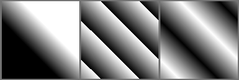 循環值設定 : 左圖 無。中圖 前鋒。右圖 交替。¶
- 對稱線性
這將會繪製直線漸變，並且會沿軸鏡像。起點和終點之間的距離和角度將分別是定義漸變的大小和旋轉。
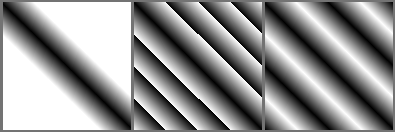 循環值設定 : 左圖 無。中圖 前鋒。右圖 交替。¶
- 放射
從中心位置 ( 開始點 ) 繪製漸變，半徑等於起點 ( 開始點 ) 和終點 ( 結束點 ) 之間的距離。
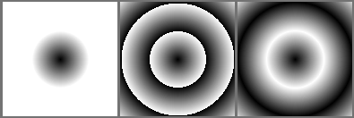 循環值設定 : 左圖 無。中圖 前鋒。右圖 交替。¶
- 平方( 正方 )
從中心位置 ( 開始點 ) 繪製正方形的漸變，起點 ( 開始點 ) 和終點 ( 結束點 ) 決定了方形漸變的大小以及其旋轉角度。
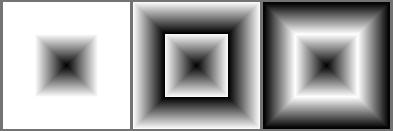 循環值設定 : 左圖 無。中圖 前鋒。右圖 交替。¶
- 圓錐
從中心位置 ( 開始點 ) 繪製環繞包覆的漸變，起點 ( 開始點 ) 和終點 ( 結束點 ) 決定環繞的開始位置及角度。
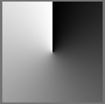 循環值設定 : 左圖 無。中圖 前鋒。右圖 交替。¶
- 對稱圓錐
從中心位置 ( 開始點 ) 繪製環繞包覆的漸變，並且會鏡像對稱環繞包覆，起點 ( 開始點 ) 和終點 ( 結束點 ) 決定環繞的開始位置及角度。
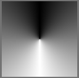 循環值設定 : 左圖 無。中圖 前鋒。右圖 交替。¶
- 螺旋
從中心位置 ( 開始點 ) 繪製螺旋型漸變，起點 ( 開始點 ) 決定螺旋的開始位置，起點與終點 ( 結束點 ) 決定螺旋的大小 ( 也可以說去數量 ) 及角度。
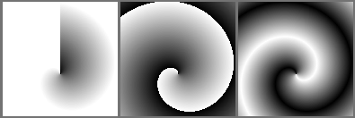 循環值設定 : 左圖 無。中圖 前鋒。右圖 交替。¶
- 反向螺旋
從中心位置 ( 開始點 ) 繪製螺旋型漸變，但會以另一個方向做轉動，起點 ( 開始點 ) 決定螺旋的開始位置，起點與終點 ( 結束點 ) 決定螺旋的大小 ( 也可以說去數量 ) 及角度。
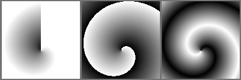 循環值設定 : 左圖 無。中圖 前鋒。右圖 交替。¶
- 按輪廓漸變
會按照圖像邊界塑造漸變（位置設定對這個漸變無效）。
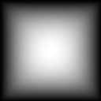
- 循環 :
- 無
這會讓漸層的結尾無限延伸出去到填滿畫布面積 ( 依照螺旋來看感覺只會繞一圈就斷掉，一般線性或放射會以開始和結束點的結果向外無限延伸 )。
- 前鋒
這會讓漸層在結尾時接續起始然後重複，並無限延伸出去到填滿畫布面積 ( 若頭尾顏色不同或差異很大漸層會有斷峰的感覺 )。
- 交替
這會讓漸層在結尾時接續尾部並鏡像過程到起始然後重複，並無限延伸出去到填滿畫布面積 ( 因為它會不斷的反覆鏡像這樣的過程我們稱作交替 )。
- 反轉
反轉漸變的方向 ( 這邊的意思是顏色，如果是螺旋需要反轉旋轉方向，請使用反向螺旋 ) 。
- 反鋸齒閥值
掌控**循環**之間的邊界的平滑程度，循環設定為**無**該設定便無作用，若循環設定為**前鋒**該設定最有效果。
數值為 0 也就是沒有平滑。 邊界會是強烈鋸齒。
數值大於 0 等於是告訴 Krita 應該平滑邊界的像素數 ( 以頭與尾邊界計算 1 pix共計 2 pix 的混合 )。
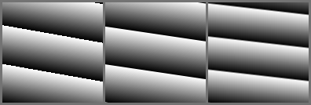 左圖: 0。 中圖: 0.5。右圖: 1。¶
位置 ( 標籤項目 )¶
- 開始
設定漸變的起點（就像在漸變工具中，第一次點擊的位置）。
- 結束
設定漸變的結束點（就像在漸變工具中，拖動後放開滑鼠的位置）。
- 單位
透過選項更改開始與結束的數值以及單位，使開始與結束 ( 點 ) 的數值具有不同含義：
- 像素
最一般的像素單位距離。
- 寬度百分比
這個選項會將距離表示為圖像總寬度的百分比。假設圖像寬度為 1000 像素，高度為 500 像素，並且數值設定為 25，那麼這將轉換計算為 250pix（圖像寬度的 25%）。
- 高度百分比
這個選項會將距離表示為圖像總高度的百分比。假設圖像寬度為 1000 像素，高度為 500 像素，並且數值設定為 25，那麼這將轉換計算為 125pix（圖像高度的 25%）。
- 短邊百分比
這個選項會將距離表示為圖像最短邊的百分比。假設圖像寬度為 1000 像素，高度為 500 像素，並且數值設定為 25，那麼這將轉換計算為 125pix（圖像最短邊的 25%）。
- 長邊百分比
這個選項會將距離表示為圖像最長邊的百分比。假設圖像寬度為 1000 像素，高度為 500 像素，並且數值設定為 25，那麼這將轉換計算為 250pix（圖像最長邊的 25%）。
當圖像大小改變時，百分比單位會非常有用。假設要保持從圖像最左側到最右側的線性漸變，就可以將開始設定為 (x = 0 像素，y = 0 像素)，將終點設置為 (x = 100% 的寬度，y = 0 像素）。
換句話說，如果希望圖像不管如何改變大小，漸變始終都是相同的大小，則應使用像素單位。
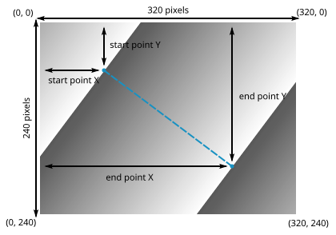 最後舉例要製作上圖所示的漸變，設定如下 : 開始位置 : X 坐標設置為 80 像素、寬度的 25% 或最長邊的 25% Y 坐標設置為 60 像素、高度的 25% 或最短邊的 25% 結束位置 : X 坐標設置為 240 像素、寬度的 75% 或最長邊的 75% Y 坐標設置為 180 像素、高度的 75% 或最短邊的 75%
注意，如果使用百分比，漸變的開始和結束位置將自適應圖像( 畫布 )的大小，而使用像素單位將使漸變的位置、角度及大小維持靜態。
- 定位方式
來決定結束的坐標數值是否相對於開始的座標。
- 絕對座標
依圖像 ( 畫布 ) 最左上角為初始，計算到結束數值的距離。
- 相對座標
依照開始的座標為初始，繼續增加計算到結束數值的距離。
- 座標系統 ( 結束點 )
透過選項更改開始與結束的定位系統，使結束 ( 點 ) 的數值具有不同含義進而計算出不同的結果。
- 笛卡爾 ( X Y )座標
結束點的坐標是建立於相對圖像左上角或起點的水平 ( X ) 和垂直 ( Y ) 距離來設定。
- 恆座標
結束點的坐標是建立於相對圖像左上角或起點的角度和距離來設定。
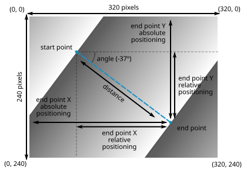 要在上圖的漸變中設定結束點位置，可以使用笛卡爾坐標並設定為相對於圖像左上角（絕對定位）或相對於起點（相對定位）的 X 和 Y 坐標.
無論如何，在一些情況下，使用極坐標並建立相對於起點的角度和距離來設定結束點位置更為方便（注意如果使用極坐標就會始終用相對於起點的位置做定位）。
漸變色彩 ( 標籤項目 )¶
在這兒可以選擇漸變所使用的實際顏色。